Вы никогда не поймаете действительно много рыбы, если не воспользуетесь новой уникальной приманкой!
Активатор клева Fish Hunt
Обеспечивает двойной эффект:
-
1
Привлекает рыбу в одно место
с дальних расстояний -
2
Обеспечивает клев, вызывая
дикий аппетит даже у сытой рыбы
Ни одна другая прикормка
не гарантирует вам такой улов как
активатор клева Fish Hunt
Это единственный на
сегодняшний день активатор
клева с доказанным эффектом
НОВИНКА 2020
У рыбы начинается период интенсивного жора. Это обстоятельство вместе с активатором клева Fish Hunt обеспечивает поистине феноменальный клев.
Обязательно попробуйте настоящую рыбалку с активатором клева Fish Hunt! Закажите сейчас, пока есть в наличии!
Принцип действия:
Главным принципом Fish Hunt является постоянное повышенное чувства голода, особенно у крупной рыбы. Fish Hunt работает непосредственно на инстинкты рыбы на физиологическом уровне, сначала, чтобы привлечь с дальнего расстояния и заставить искать пищу в месте прикармливания, а затем активирует активное поглощение этой пищи, даже сытой рыбой.
Создан в 2011 Году в Италии
Действие основано на феромонах — биологически активных веществах, выделяемых живыми организмами в окружающую среду и специфически влияющих на поведение, физиологическое и эмоциональное состояние или обмен веществ других особей того же вида.
В 2011 году в результате плодотворного взаимного сотрудничества группы специалистов из Центра изучения проблем окружающей среды, рыболовной деятельности и аквакультуры Италии под руководством доктора Энди Мура синтезировано химическое вещество, состав и действие которого были идентичны естественному феромону рыб, приводящему к резкому немотивированному повышению их аппетита и тенденции к скучиванию.
В последствии на основе синтезированных феромонов был произведен коммерческий продукт, поступивший на рынок Европы под торговой маркой Fish Hunt.
 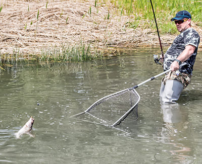
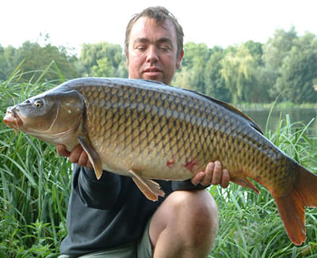
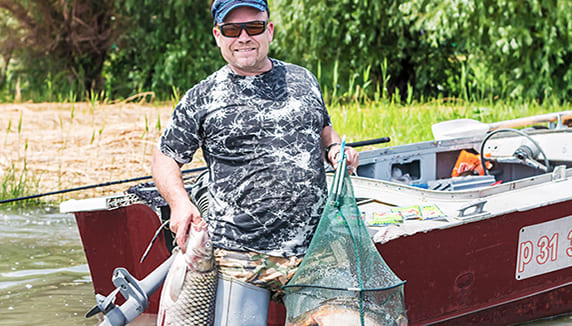
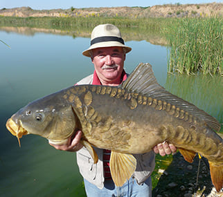
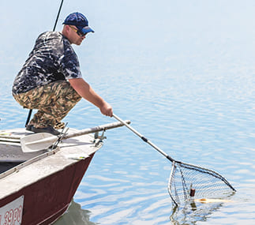
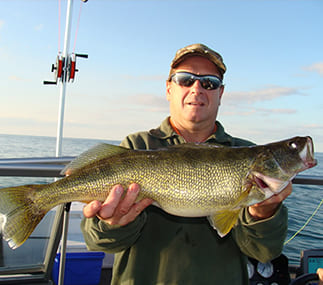
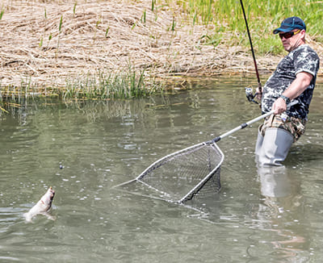
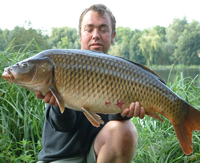
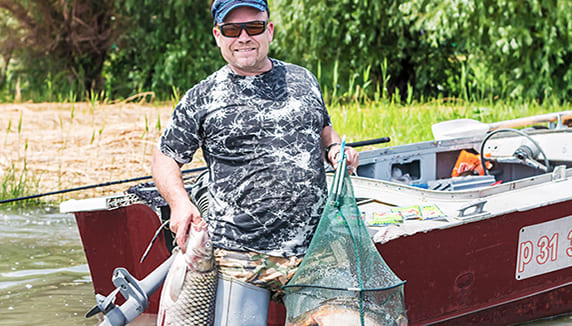
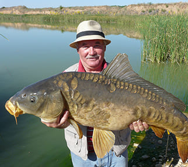
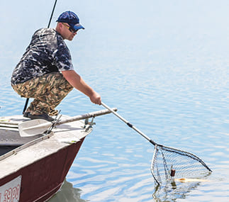
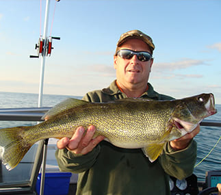
Fish Hunt является продуктом, востребованным не только в качестве аттрактанта для привлечения рыбы в спортивном и любительском рыболовстве, но веществом, активно используемом рыбоводческими хозяйствами, так как при его применении появляется возможность выкармливания хищной рыбы растительными кормами.
В Украине Fish Hunt появился на рынке только в 2019 году и представлен фирмой ООО “МС”.
 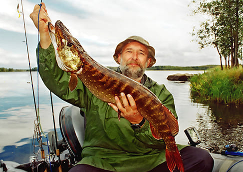
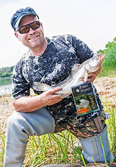
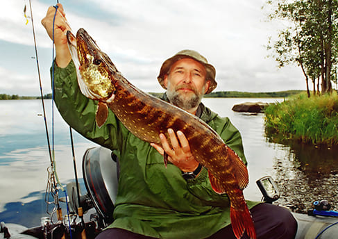
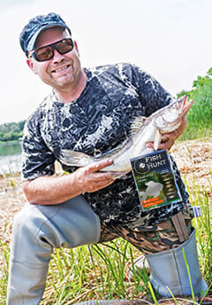
Заказать
Описание
С Fish Hunt включает в себя синтезированные феромоны, концентрированные эфирные масла и универсальные кормовые модели для всех видов рыб.
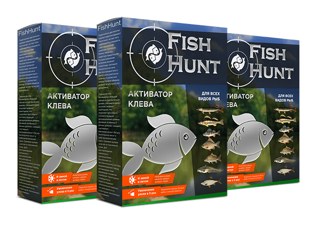Инструкция по применению
Для ловли мирной рыбы замешайте содержимое пакетика с прикормкой, которую обычно используете. Это может быть любая прикормка: покупная , самодельная, многокомпонентная и т.д.. Для удобства смешивания возможно предварительно растворить Fish Hunt с небольшим количеством воды.
Для ловли хищной рыбы Fish Hunt можно обрабатывать все искусственные и естественные приманки. Силиконовые приманки, воблеры или блесна можно опустить в емкость с аттрактантом.
Использовать Fish Hunt можно и с живой наживкой напрямую. Растворите содержимое пакетика в любой воде, окунайте туда наживку и насаживайте на крючок.
В одной упаковке 7 саше по 5 мл.
Срок годности:
 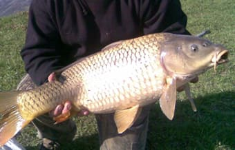
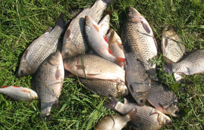
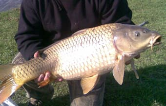
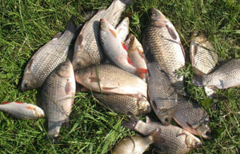
Самое важное качество Fish Hunt – это его высокая эффективность при ловле более крупных экземпляров
-
Приманка испытана и протестирована в разных водоемах: реках, каналах, озерах, заливах, морях – и зимой и летом.
-
Вы можете привозить гораздо больше рыбы с каждой рыбалки!
-
Просто добавьте 1 пакетик в прикормку, опустите в воду и голодная рыба начнет кидаться на то что вы ей предложите.
-
Одной упаковки хватает на 3 раза. 1 пакетик разводится на 2-2,5 кг прикормки.
-
С приманкой Fish Hunt вы наловите больше чем можете себе представить!
Чтобы получить активатор клева Fish Hunt сделайте заказ: